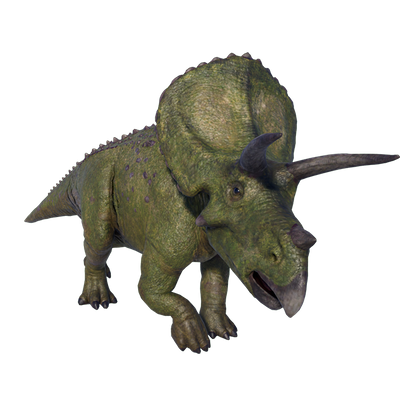

Useful Website
Torosaurus is notable for having one of the largest skulls the world has ever seen, measuring up to 2.7m in length. Fossil remains have shown that the frill on its skull contained two large holes, lending the genus its name, which translates to ‘perforated lizard’. Torosaurus is an herbivorous dinosaur and can weigh up to six tonnes, requiring a huge amount of vegetation every day for sustenance.
